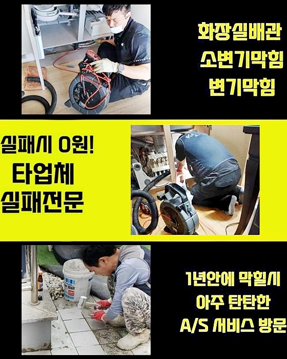
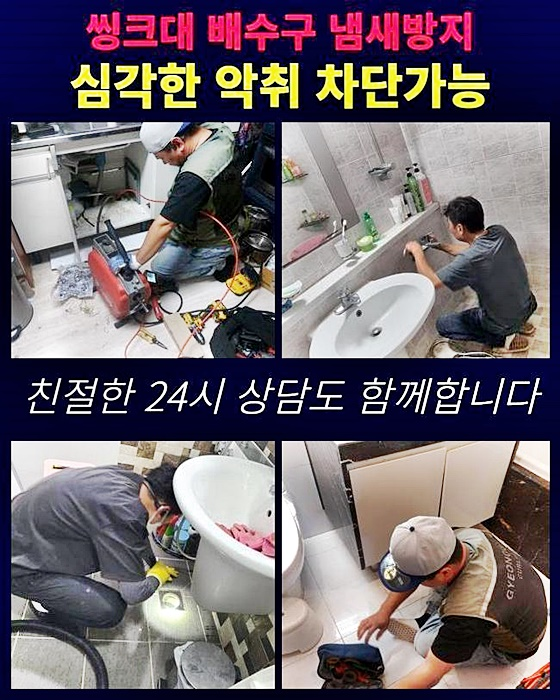
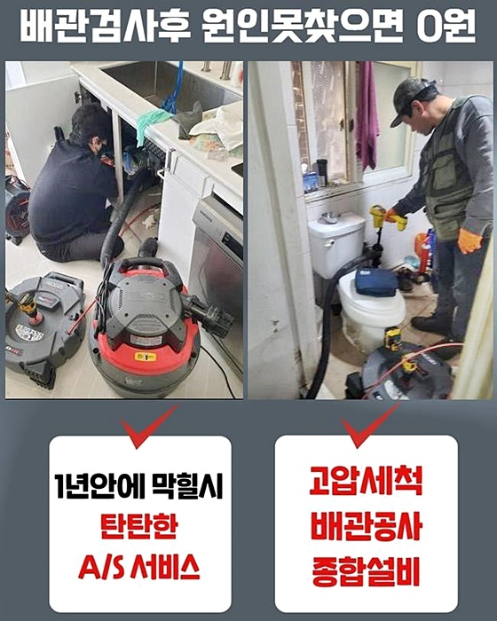
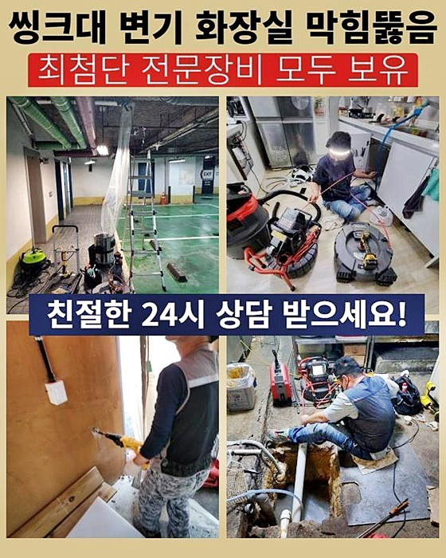
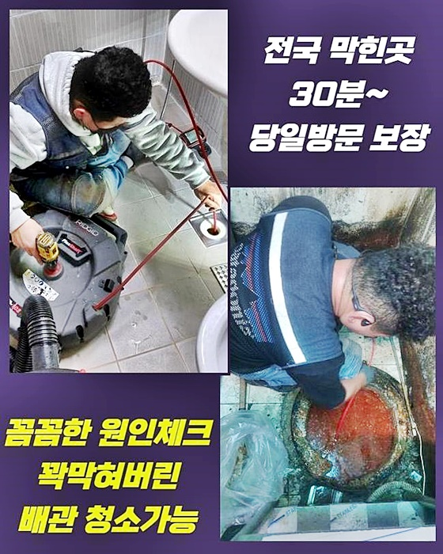
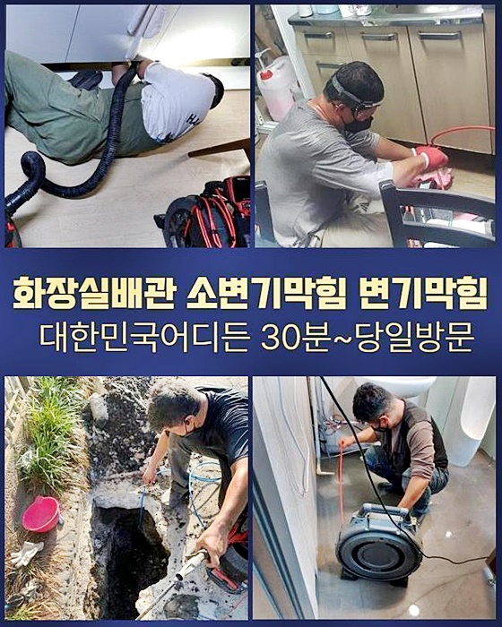

🏠 강북 미아동대변기막힘 삼각산동 하수관고압세척 누수탐지
용인 변기막힘 전문 시공 후기

📋 작업 개요
- 위치: 용인
- 서비스 유형: 변기막힘, 하수구막힘, 배관막힘, 누수수리, 역류해결, 뚫는업체, 배관청소, 고압세척, 설비공사
- 작업 일시: 2024. 7. 20. 9:45
- 업체명: 하수구수사대 (010-5615-2118)
🔍 문제 상황
강북 미아동대변기막힘 삼각산동 하수관고압세척 누수탐지
일상생활시 배관에서 막힘증세가 발발되면 불편함이 느껴질텐데요
하수구가막히면 물이빠지지못하며 증세가 발생하는거죠
이번장소에선 상가의건물을 운영하고계시는 고객님이 하수관에서 물이넘친다고 연락을주셨죠
배관끝까지 물이찬 상태임을 말씀해주셨답니다
점검하기위하여 현장에 신속히방문드렸죠 배관내부쪽은 확인하지못했지만 알수있던건 배수구주위에 물이차올랐다는 것인데요
배관내부쪽에 많은양으로 오염물들이 쌓이면서 하수도막힘 증상이 발현된것으로 판단되었죠
악취현상까지 발발된 상태이다보니까 현장상태가 좋지못했죠
점검작업을 진행하고자 석션기를 준비했어요 역류한물을 없애기위해서 흡입장비로 제거해내기 시작했어요
넘친물들이 제거되었어요 역류상태를 제거해봐야지만 내시경장비를 활용해서 상태체크를 확실하게 할수있어요
배관카메라로 하수구내를 확인해볼준비를 마칠수있었어요
들여다보았더니 오염물질들이 퇴적되어있는것을 살펴볼수가 있었네요
좀더 투입해서 살펴보고싶었지만 오염물로인해 진입자체가 어려웠습니다

🔎 원인 분석
💡 전문가 진단: 정밀 진단 장비를 사용하여 슬러지의 고착 여부를 판명하고 타격/세척 작업을 실시했습니다.
이럴경우 과도하게 투입하려고 하는것보다는 오염물부터 없애서 통수시키는게 우선이랍니다
막힌정도마다 차이점이있으므로 이러한점에서 풍부한경력을 요구해요
입구부분부터 이물이 보였으므로 제거하고자했죠
샤프트기를 이용해서 간략하게 초입부를 제거시켰어요
통수작업에 착수하여 분쇄기기가 아래쪽으로 투입되게끔 해주는데요
플렉스샤프트기는 무식하게 날카로운기계가 아니고 사슬로이루어진 형태랍니다
사슬체인이 배관아래를 회전하며 배수관의 잔여물질들을 소거하는 방법이랍니다
그러므로 배수구에손상을 입히지않으면서 소거해낼수있죠
샤프트기말고도 여러도구들이 있습니다 막힌정도의 따라서 알맞게도구를 사용해봐야해요
과도하게 사용하다간 배관이깨져서 2차문제가 일어날수있어요
고압세척기로 진행하지않아도 대다수의 오염물을 샤프트장비로 제거가능하죠
그렇지만 오늘장소처럼 심각한경우에는 샤프트장비만으로 없애기란 어렵다고보시면 되겠습니다
간혹하여 관리소같은곳의 사장님에게 부탁하여 막힘현상을 잡아보려는 고객분도 계십니다

🔧 작업 과정
기술자라면 문제가없더라도 일반적의 업체라면 배관초입쪽만 뚫곤해서 저희에게로 재차내방을 요청하시기도해요
이물제거시 내시경기도 함께투입해 배관의모습을 확인해가며 이물질들을 제거할수있었죠
스케일링과정에는 꼭 내시경을 활용해서 하수관안을 살피면서 작업해야만 한답니다
굳은이물이 샤프트기계를 만나게되니 분해되며 소거되는걸 확인하게되었죠
하수구내벽에 달라붙어있는 찌꺼기를 청소하기로했죠 세척과정이 이루어지며 빼곡히 덩어리져서 막히게되었던 하수구가운데가 뚫리게되며 통수를해결했어요
이젠 다른기계가 원활히 투입되는 공간을만들었죠
고착된슬러지가 발견되었기에 지금현장에선 고압세척기계를 이용해서 진행해야만해요
트럭과 연결되어진 고압세척도구로 밑에있는 슬러지들을 제거해보면되죠
이물로인하여 막힌 상황이다보니 밀어내주면서 없애면되겠습니다
고압청소는 오염물제거와 깔끔히 배수구세척까지 진행할수있죠
배관내구도를 신경쓰지않고 진행하게될경우 강한수압력이 작용하여 버티지못하고 깨질수가있어요
파손되면 공사문제로까지 진행될수있는데요 이러한일이 발생되지않게 내부모습을 체크해가며 진행하고있으니 염려마세요!
장비를투입해 이물이발견된곳을 신속하게 제거해내면 된답니다
이물이흘러나오며 막힘문제가 해결되는것을 살필수있습니다
하수관에 흐르도록 내버려둘경우 다른쪽에 슬러지이물이 쌓이게되어 재발하는문제가 발생하게되는데요
그렇기때문에 이물질은 건져낸후 따로없애야해요 잘게분해되서 흘러나온 오염물질이 상당히많았어요
원활한분쇄가 진행이되지 못한곳을 처리해보기위해 배관내부로 샤프트기를 집어넣어 없애주면되죠
하수구촬영기로 살펴보면서 상황에걸맞게 작업하고있으니 걱정마시길바래요
쌓인이물을 말끔히 분해한뒤 흡입장비를 이용하여 남겨진것들을 제거할수있었죠
스케일링작업시 중요한것이라고 하면 하수관카메라로 확인하여 오염물이 잔여되지않아야 한다는것이죠
세세한작업이 이루어지지못하면 같은문제로 막힘이일어나요 하수구에서 깨끗한물로 흘러나올수있도록 작업해드렸어요


✅ 작업 완료
하수도에 들어차있던 잔여물이깨끗히 제거된모습을 볼수있었죠
막히는일이 없게끔 사전에 하수관상황을 점검해서 세척해보는걸 추천드렸죠
다양한하수가 흘러가는 통로이기때문에 주기적인 관리를통해 안전한하수구로 이용해보시기 바래요
어떤곳이라도 한시간안팎으로 도착해드릴수있고 분명하게 수립계획을 안내해드리고 있사오니 안심하시길 바라요
이밖으로도 궁금한게있다면 전화하시면 상세히 상담도울테니 편안하게 전화주세요!
막힘증세를 내버려둔다면 심화될수있으니 방치하지말고 징조를보일때 대처해보시는걸 추천드려볼게요



⚠️ 베란다 누수 및 방수 관리 방법
- ✅ 비가 많이 올 때 창틀 주변이나 아래층 천장에 얼룩이 생기는지 정기적으로 확인해 보세요.
- ✅ 우수관 주변 실리콘 마감이 들뜨거나 깨진 틈새가 있는지 손상 여부를 수시로 체크하세요.
- ✅ 베란다 바닥 타일의 줄눈(메지)이 소실되면 그 틈으로 물이 침투하여 누수가 유발됩니다.
- ✅ 누수 의심 증상 발견 시 방치하면 아래층 손실이 커지므로 즉시 전문가의 진단을 받으십시오.
💡 핵심 정리
- 확실한 장비 작업(내시경 점검 및 샤프트 스케일링)으로 원인을 뿌리 뽑습니다.
- 작업 후 1년 이내에 동일한 부위 재발 시 100% 무상 A/S 서비스를 보장합니다.
- 서울 · 경기 · 인천 전 지역에 24시간 언제든 긴급 출동할 수 있도록 항시 대기 중입니다.
❓ 자주 묻는 질문 (FAQ)
🚨 용인 변기막힘 문제로 고민이신가요?
정확한 원인 진단과 확실한 시공으로 재발 없는 해결을 약속드립니다.
24시간 긴급 출동 | 서울 · 경기 · 인천 전지역 | 1년 내 재발 시 무상 A/S